Funciones
| funcion | fecha | ¿donde puedo ver la funcion? |
|---|---|---|
| Viejos fracasos | (1977) |  |
| Mastropiero que nunca | (1979) |  |
| Les Luthiers hacen muchas gracias de nada | (1980) | |
| Humor dulce hogar | (1986) | 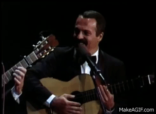 |
| Viegésimo aniversario | (1989) | 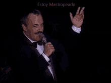 |
| Les Luthiers, grandes hitos | (1995) | 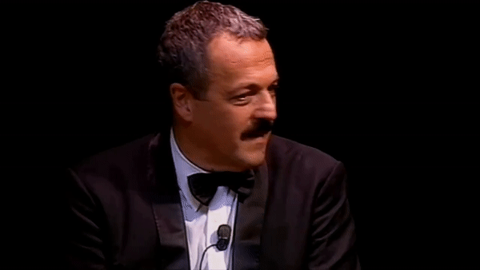 |
| Bromato de armonio | (1998) | 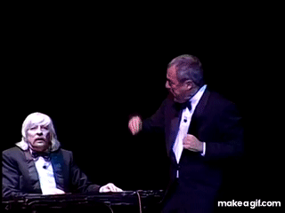 |
| Unen canto con humor | (1999) |  |
| Todo por que rías | (2000) | 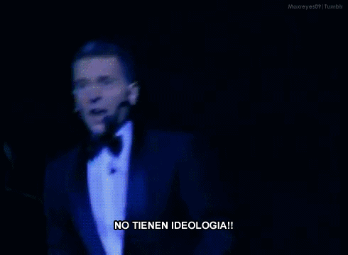 |
| El Grosso Concerto | (2001) | 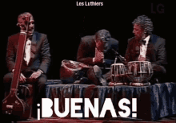 |
| Las obras de ayer | (2002) | 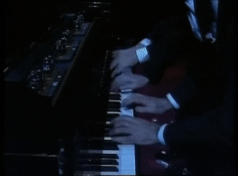 |
| ¡Aquí Les Luthiers! | (2005) | 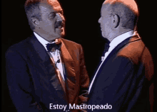 |
| Los Premios Mastropiero | (2006) | 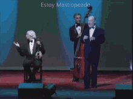 |
| Lutherapia | (2009) | 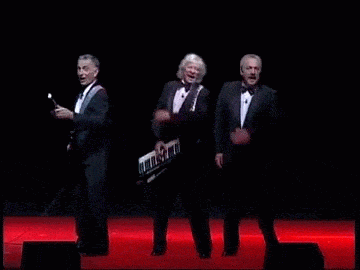 |
| ¡CHIST! | (2013) | 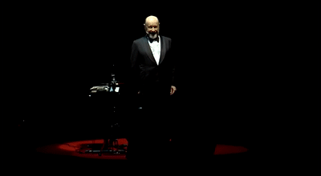 |
| Viejos hazmerreíres | (2016) | 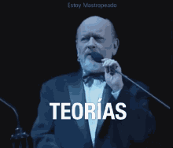 |